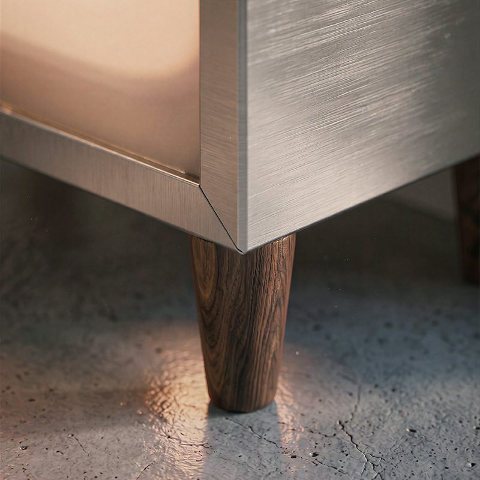

Earth Original Design’s lateral approaches aren’t limited to method and style, but in how the materials of the products are selected as well. Considerations for how users will interact with the object, how the designs wear and what qualities show themselves are all dependent on the materials that are chosen.
Timber
Objects like the Entomon and components of the Stereo Lamp are designed to highlight the natural tones and colours that radiate from timber when properly shaped and oiled. The design materials being; Laser-cut boards and lathed Walnut and Jarrah.

Glass
Earth Original Design’s first time using Czech glass is in the debut of the Vinyl Pendant where it is used as the core material of the product. The material is cold-worked on grindstones to carve and shape a silhouette that is able to refract light unlike any other material.
Metal
The Stereo Lamp and Magazine Bottle are designed to express the textures of brushed aluminium. A durable, long-lasting metal that is timeless when properly designed.

Prototype Materials
Nearly all of Earth Original Design’s early prototyping is conceptualised through the use of 3D printers, using varied scale models and fragmented components to assure a functional and properly scaled design is developed before moving on to the stages exploring official product materials.